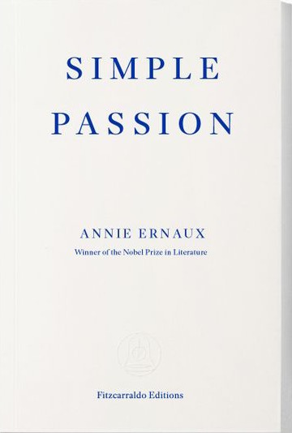

my favorite books

currently reading: simple passion, annie ernaux
my favorite author is haruki murakami, so it follows that most of my favorite books are works of his. i am a big prose enjoyer, and i like anything that conveys introspection, passion, and unrelenting desire. i used to be a big poetry enthusiast, and now i dabble in the occasional non-fiction book.
in no particular order:
- the city and its uncertain walls, haruki murakami
- what i talk about when i talk about running, haruki murakami
- norwegian wood, haruki murakami
- on earth we're briefly gorgeous, ocean vuong
- can't hurt me, david goggins
- written on the body, jeanette winterson
- 1984, george orwell
- animal farm, george orwell